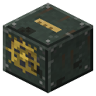

Приводная муфта


Между шкивом и токарным станком IC2, прокатным станом Railcraft или машиной Forestry (плотник, сквизер, куб, ферментер...; вплотную, не в трубы BC).
Муфта ставится между шкивом вала и чужим станком вплотную. Кормит токарный станок IC2 (kU), прокатный стан Railcraft (16 л.с. -> 32 RF/т) и машины Forestry — плотник, сквизер, перегонный куб, ферментер, центрифуга, разливщик, анализатор (8 л.с. -> 16 RF/т, с 1.57.8). Так плотник работает от пара уже во второй эпохе. Фабрикатор (ламповый завод), коробка фермы и климатизатор улья от вала не крутятся (1.57.11): питать электродвигателем Forestry от сети IC2, это третья эпоха. В энергетические трубы BC и прочие RF-машины муфта не отдаёт ничего. Вплотную к лицу ЭКГ IC2 — электропривод вала. Shift + пустая рука или сигнал красного камня — выжать.
### Электропривод: когда он нужен
Муфта вплотную к лицу электрического кинетического генератора IC2 (ЭКГ) сама крутит вал, как паровая машина. Генератор разверни ключом лицом к муфте, моторы IC2 положи в его слоты.
- Один мотор даёт 25 л.с.: быстрый мотор через понижающий редуктор, стальные шестерни стоят в рецепте ЭКГ. 4 мотора — 100 л.с., 10 — 250 л.с.
- Цена — 0.625 EU/т за 1 л.с. Головка-генератор турбины или дизеля даёт 0.5 EU с 1 л.с., значит цепь пар -> ток -> вал отдаёт 80 %. Пятая часть уходит в провода и моторы.
- Электричество берётся только на то, что вал реально съел: станки стоят — ток не идёт. На одной линии с паром нагрузку берёт первым, пар добирает остаток.
Зачем он, если пар прямо на вал отдаёт все 100 %? Котельная рядом со станками — ставь вал, он выгоднее. Цех далеко или станки разбросаны по базе — тяни кабель. Ты отдаёшь 20 % мощности вместо сотни блоков вала с редукторами, а один генератор у реки кормит несколько цехов. Так заводы и электрифицировались в 1890–1920-х: сначала мотор на старый групповой вал, потом свой мотор на каждый станок (электродвигатель Forestry вплотную).
Шестерни мощность не добавляют: редуктор меняет обороты на момент, а сколько вошло, столько и вышло. Вал Zavod считает только л.с., поэтому 25 л.с. — это мощность самого мотора, а редуктор в рецепте объясняет, почему быстроходный мотор крутит медленный заводской вал.
Параметры
| Эпоха | 3 — Электричество |
|---|---|
| Многоблок | нет |
| Привод | вал 16 / 8 / 4 л.с., даёт вал |
| что делает | отбор вала на токарный IC2 / прокатный RC / машины Forestry; у ЭКГ — электропривод вала |
| энергия на входе | вал или kU ЭКГ |
| на выходе | kU / RF / вал |
| из чего | бронзовые шестерни, железный вал IC2, железные листы |
| л.с. (Приводная муфта у ЭКГ IC2) | 25 на мотор ЭКГ (4 мотора — 100, 10 — 250) |
| л.с. (Муфта у прокатного стана RC) | 16 |
| л.с. (Муфта у машины Forestry) | 8 |
| л.с. (Муфта у токарного IC2) | 4 |
Числа
| RF за 1 л.с. (муфта) | 2 RF |
|---|---|
| kU за 1 л.с. | 10 kU |
| kU за 1 л.с. электропривода (мотор ЭКГ 100 kU/т = 25 л.с.) | 4 kU |
| муфта -> токарный IC2 | 4 л.с. |
| муфта -> прокатный стан RC | 16 л.с. |
| муфта -> машина Forestry (плотник, сквизер...) | 8 л.с. |
Кто кормит
- вал ← Паровая машина, Паровая машина высокого давления (трансмиссия)
Кого кормит
- машины Zavod её продукт не едят
Как устроено (из кода)
Приводная муфта: отбор мощности с вала (через шкив) на чужой станок, стоящий вплотную. - Токарный станок IC2: отдаёт кинетическую энергию (kU), станок сам берёт с соседа. Режет он по-прежнему руками, в окне. - Прокатный стан Railcraft: вталкивает RF. Стан берёт 50 RF за тик работы; полный - муфта не тянет вал. - Машины Forestry (плотник, сквизер, куб, ферментер, центрифуга, разливщик, анализатор): ремень от трансмиссии, как в 1860-х. Цель - класс forestry.* с методом receiveEnergy (RF-приёмник); двигатели Forestry RF не принимают - не цель. Только вплотную: в трубы BC муфта не отдаёт. Не цель (NOT_BELT): фабрикатор (ламповый завод) - лампы, эпоха 3; коробка фермы и климатизатор улья - многоблоки на электродвигателе Forestry (эпоха 3). Больше никому: генератор IC2, энергетические трубы BC и прочие RF-машины рядом с муфтой ничего не получат (вал не превращается в электричество). Электропривод (групповой привод 1890-х): муфта вплотную к ЛИЦУ электрического кинетического генератора IC2 сама крутит вал - Transmission.motorKuPerHp kU = 1 л.с. (4). Мотор генератора (100 kU/т) - 25 л.с., десять моторов - 250 л.с.: быстроходный мотор через понижающий редуктор (стальные шестерни в рецепте ЭКГ). Цена EU - IC2.ini electric = 1.6: 1 EU -> 6.4 kU, 1 л.с. = 0.625 EU/т; с головкой-генератором (0.5 EU с 1 л.с.) пар -> ток -> вал = 80 %. Берёт kU только на то, что вал реально съел; на линии с паром нагрузку берёт первой. Ветряк, водяное колесо и паровая турбина IC2 вал не крутят - только электричество. Shift + пустая рука - выжать/отпустить муфту; сигнал красного камня - выжата.